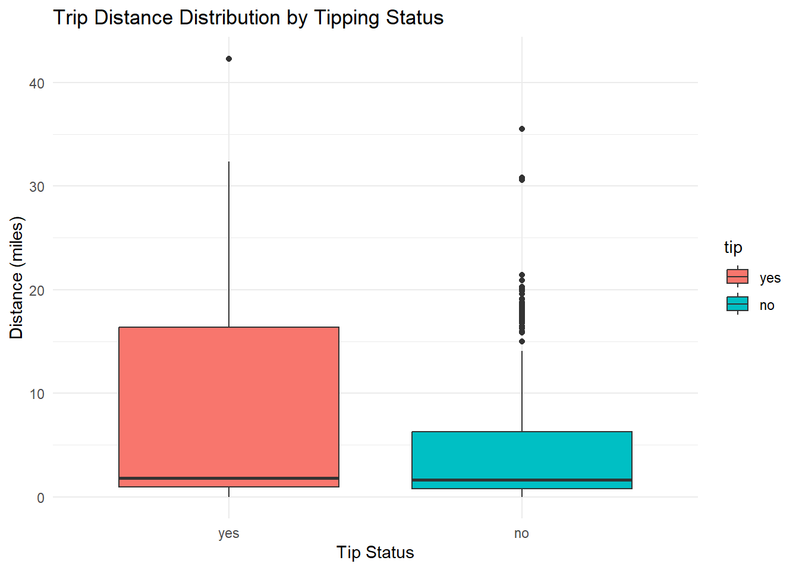

Project
Investigation into Chicago taxis
Introduction
This is an exercise from the course on Data Visualization imparted by Professor Mine Cetinkaya and Professor Elijah Meyer at Duke University via Coursera. We will work with the data set taxi that contains information about tipping rates for 10,000 trips in the city of Chicago in 2022. The purpose of the exercise is to show proficiency in data exploration, data transformation, data visualization and statistical analysis based on two questions formulated by the Professors. First, I will upload the packages that I will use, then I will answer the two questions, and finally, I will answer a question formulated on my own.
Packages
First, I took a look at the data set to get a sense of the data using View(taxi), glimpse and ?taxi commands.
Question 1
I used ggplot2 to visualize the relationship between the variables tip and distance.
A box plot suggests that there may be a relationship between the distance traveled and tips left.
In fact, a density plot shows clearly that the distribution of tips concentrates below the 20 miles distance threshold, as shown below, where the peak for tipped trips (in red) is higher than for trips with no tip given.

A t test shows that the average distance for rides that received a tip was approximately 6.37 miles and that the the average distance for rides that did not receive a tip was approximately 4.57 miles. The mean distance for tipping rides is about 1.8 miles longer than non-tipping rides (\(6.37 - 4.57\)).
Welch Two Sample t-test
data: distance by tip
t = 7.9216, df = 1013.3, p-value = 6.142e-15
alternative hypothesis: true difference in means between group yes and group no is not equal to 0
95 percent confidence interval:
1.352460 2.243148
sample estimates:
mean in group yes mean in group no
6.366350 4.568546 In conclusion, there is a statistically significant difference in the mean trip distance between rides that received a tip and those that did not. Customers are significantly more likely to leave a tip on longer trips compared to shorter ones.
Question 2
We want to know if people tip drivers from the company Chicago Independents more than drivers of other companies. I created a contingency table and a proportion table to examine the data. Then, I created a bar plot to check the relationship between tip rates and companies.
yes no
Chicago Independents 741 40
City Service 1100 87
Flash Cab 878 132
Sun Taxi 1298 84
Taxi Affiliation Services 1534 160
Taxicab Insurance Agency Llc 1139 92
other 2519 196
yes no
Chicago Independents 0.94878361 0.05121639
City Service 0.92670598 0.07329402
Flash Cab 0.86930693 0.13069307
Sun Taxi 0.93921852 0.06078148
Taxi Affiliation Services 0.90554900 0.09445100
Taxicab Insurance Agency Llc 0.92526401 0.07473599
other 0.92780847 0.07219153
Next, I performed a Chi-squared test to formally examine the relationship between tip (a binary/dichotomous variable) and company (categorical). I created a new variable to compare the company Chicago Independents with the rest of companies which is the most concrete relationship that we were asked to examine.
Based on the p-value obtained in this test (.003) we can reject the null hypothesis that there is not association between the taxi company group (Chicago Independent vs others) and the tipping outcome and we can conclude that data strongly suggests that the tipping rate for Chicago Independents is significantly higher (94.88 percent) than for other companies (91.85 percent) at the five percent level of significance.
Chicago Independents Other
781 9219
yes no
Chicago Independents 741 40
Other 8468 751
Pearson's Chi-squared test with Yates' continuity correction
data: indep_vs_other_table
X-squared = 8.6318, df = 1, p-value = 0.003303Your own question
I wanted to know which of the variables of the data set taxi would be a significant predictor of tip (a binary variable). Thus, I ran a logistic regression model to answer this question. From the output we can see that distance is a significant predictor for tipping rates along with levelsthe trip starting and ending in locations from different communities. Also, people tend to tip more during the month of April and people tend not to tip particular companies, probably due to poor service. Finally, for some reason, people tip less on Friday.
[1] "no" "yes"
Call:
glm(formula = tip ~ distance + company + local + dow + month +
hour, family = "binomial", data = taxi)
Coefficients:
Estimate Std. Error z value Pr(>|z|)
(Intercept) 2.555766 0.269303 9.490 < 2e-16 ***
distance 0.027121 0.006151 4.409 1.04e-05 ***
companyCity Service -0.394194 0.197392 -1.997 0.04582 *
companyFlash Cab -0.979825 0.188041 -5.211 1.88e-07 ***
companySun Taxi -0.175873 0.198047 -0.888 0.37452
companyTaxi Affiliation Services -0.619529 0.183602 -3.374 0.00074 ***
companyTaxicab Insurance Agency Llc -0.408739 0.195711 -2.088 0.03675 *
companyother -0.363270 0.178927 -2.030 0.04233 *
localno 0.255077 0.091869 2.777 0.00549 **
dowMon -0.270518 0.176132 -1.536 0.12457
dowTue -0.229876 0.171807 -1.338 0.18090
dowWed -0.111694 0.172430 -0.648 0.51714
dowThu -0.067815 0.170871 -0.397 0.69146
dowFri -0.330319 0.171098 -1.931 0.05354 .
dowSat -0.155178 0.192792 -0.805 0.42088
monthFeb 0.037852 0.118160 0.320 0.74871
monthMar 0.108699 0.110165 0.987 0.32380
monthApr 0.221230 0.112622 1.964 0.04949 *
hour 0.005217 0.008600 0.607 0.54409
---
Signif. codes: 0 '***' 0.001 '**' 0.01 '*' 0.05 '.' 0.1 ' ' 1
(Dispersion parameter for binomial family taken to be 1)
Null deviance: 5531.3 on 9999 degrees of freedom
Residual deviance: 5417.3 on 9981 degrees of freedom
AIC: 5455.3
Number of Fisher Scoring iterations: 5